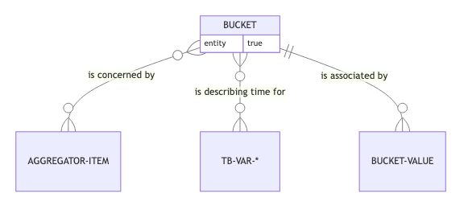

automaton-optimization.time-based
time-based stores a value at a bucket in time.
A tb-var is a variable than stores one value for each bucket. You can choose among the following variant tb-var-additive-deltas, tb-var-additive-contiguous, tb-var-latest-deltas, tb-var-latest-contiguous, or even build you own as it implements the opt-tb-protocol.
The “bucket” concept is a natural integer (starting at 0) representing the time in the internals of the simulation. 
Some bucket of a tb-var can be grouped in bucket-aggregate, note that this bucket-aggregate will be seen as the bucket of the newly created tb-var. 
aggregator
(aggregator aggregates)Returns the aggregator based on the aggregates.
default
(default tb-var)Default value before measurement in the tb-var.
get-measure
(get-measure tb-var bucket)Returns the data stored at time bucket.
get-measures
(get-measures tb-var buckets)Returns the range of data in [bucket-begin;bucket-end[.
measure
(measure tb-var bucket data)Returns a new instance of TimeBased with data measured at time bucket. The effect will depend on the kind of TimeBased.
tb-var-additive-contiguous
(tb-var-additive-contiguous default-value size)(tb-var-additive-contiguous default-value)(tb-var-additive-contiguous)Creates an additive tb-var storing the values with contiguous.
Data that are additive over buckets:
default-valueis the default value for new or empty buckets, it should be the “0”.- If a value is set to an empty bucket, the value is replacing the
default-value. - If a value is already stored in that bucket, it will be added to the existing value.
- The values should be numerical to support +.
For instance, a production is additive, since a new production recorded in the same scenario-time is added to the previous automaton-optimization.time-based.impl.additive.
This form is optimized for variables that has values all over the horizon, as it is storing in contiguous data structure.
tb-var-additive-deltas
(tb-var-additive-deltas default-value)(tb-var-additive-deltas)Creates an additive tb-var storing the values with deltas.
Data that are additive over buckets:
default-valueis the default value for new or empty buckets, it should be the “0” of your+operator.- If a value is set to an empty bucket, the value is replacing the
default-value. - If a value is already stored in that bucket, it will be added to the existing value.
- The values should be numerical to support +.
For instance, a production is additive, since a new production recorded in the same scenario-time is added to the previous automaton-optimization.time-based.impl.additive.
This form is optimized for variables that has few values over the horizon, as it is storing only deltas, so only change in the value.
tb-var-aggregated
(tb-var-aggregated aggregator time-based)Creates a tb-var using the aggregator to store the values with aggregateed bucket.
tb-var-latest-contiguous
(tb-var-latest-contiguous default-value size)(tb-var-latest-contiguous default-value)A tb-var-latest is a time-based variable that, when a measure is set at bucket b, is setting all further buckets to this value unless another measure is done in between.
default-valueis the default value if no value is set for a bucket nor for previous ones.- If a value is set to an empty bucket, the value is replacing the
default-valuefor this bucket and all further ones. - If a value is stored to the same bucket, the previous value is replaced with that new one.
- If a value is stored for
b2, a further bucket in the horizon, the former value stay valid untilb2. - The values can be whatever, as no operation is done on it.
For instance, a stock level is such, since a new stock level will be recorded at that moment.
This form particularly is optimized for variables that has values all over the horizon, as it is storing in contiguous data strucure.
tb-var-latest-deltas
(tb-var-latest-deltas)(tb-var-latest-deltas default-value)A tb-var-latest is a time-based variable that, when a measure is set at bucket b, is setting all further buckets to this value unless another measure is done in between.
default-valueis the default value if no value is set for a bucket nor for previous ones.- If a value is set to an empty bucket, the value is replacing the
default-valuefor this bucket and all further ones. - If a value is stored to the same bucket, the previous value is replaced with that new one.
- If a value is stored for
b2, a further bucket in the horizon, the former value stay valid untilb2. - The values can be whatever, as no operation is done on it.
For instance, a stock level is such, since a new stock level will be recorded at that moment.
This form particularly is optimized for variables that has few values over the horizon, as it is storing deltas.
to-bucket
(to-bucket aggregator bucket-aggregator)Translate bucket-aggregate to bucket thanks to the aggregator.
to-bucket-aggregate
(to-bucket-aggregate aggregator bucket)Translate bucket to a bucket-aggregate thanks to the aggregator.
to-bucket-aggregates
(to-bucket-aggregates aggregator buckets)Translate a range of bucket to bucket-aggregates thanks to the aggregator.
validate-aggregates
(validate-aggregates aggregates)